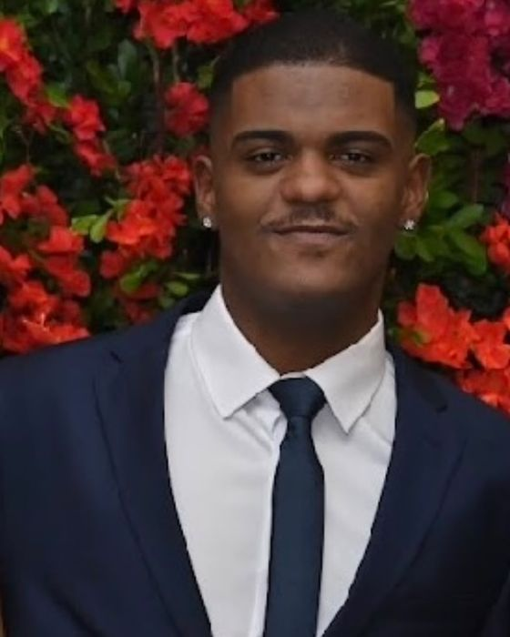

Me interesso por inteligência artificial, automação, desenvolvimento de aplicações e pela criação de soluções tecnológicas que resolvam problemas de verdade.

Sempre aprendendo, construindo e explorando novas possibilidades!
Olá! Sou estudante de Inteligência Artificial, apaixonado por tecnologia, inovação e pelo potencial da IA para transformar ideias em soluções reais.
Tenho interesse em inteligência artificial generativa, automação de processos, desenvolvimento de aplicações e criação de agentes inteligentes. Gosto de explorar novas ferramentas, experimentar tecnologias e desenvolver projetos que unam criatividade, lógica e praticidade.
Estou sempre em busca de novos conhecimentos e oportunidades para aprimorar minhas habilidades, transformar ideias em projetos e evoluir constantemente na área de tecnologia.
Acredito que a tecnologia vai muito além do código: ela também envolve criatividade, comunicação, colaboração e a capacidade de identificar problemas e encontrar soluções.
Este portfólio é meu espaço para compartilhar projetos, registrar minha evolução e colocar em prática tudo o que venho aprendendo nessa jornada pela Inteligência Artificial.
Sou extremamente comunicativo, curioso e gosto genuinamente de conversar, conhecer pessoas e trocar experiências. Acredito que boas ideias nascem não só do conhecimento técnico, mas também de ouvir, dialogar, colaborar e enxergar diferentes perspectivas.
Busco evoluir continuamente em comunicação, trabalho em equipe, criatividade e resolução de problemas, saindo da zona de conforto e aprendendo com os outros.
Para mim, unir conhecimento tecnológico e inteligência interpessoal é o que gera soluções relevantes, boas parcerias e impacto positivo. Quero crescer sem perder o essencial: a curiosidade, a conexão com pessoas e a vontade constante de aprender.
Projetos acadêmicos, experimentais e pessoais. Os que ainda são protótipos ou exploração estão identificados como tal.
Repositórios e demos serão adicionados conforme forem publicados.
Separado de forma honesta: o que já usei, o que estou aprendendo e o que ainda quero explorar.
Começando cedo, com foco em prática.
Formação profissionalizante em Juiz de Fora.
Curso online na Data Science Academy.
Uniacademia, Juiz de Fora. Cursando o 2º de 8 períodos.
Construindo projetos e procurando oportunidades para colocar o aprendizado em prática.
Aberto a estágio, primeiro emprego, networking e parcerias em projetos.